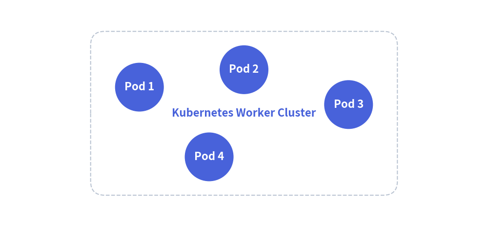
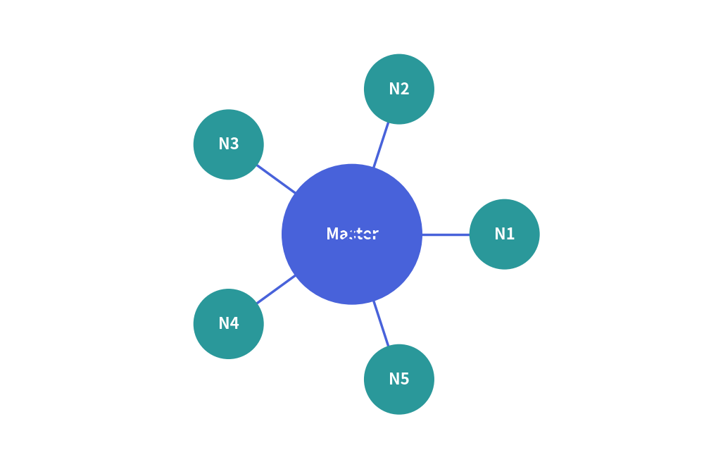
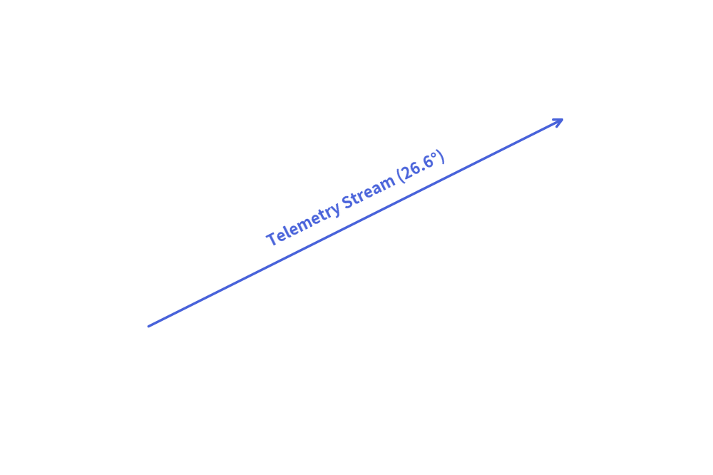

Mathematical Utilities & Dynamic Geometric Layouts (drawlib.math)
Drawlib provides geometric and mathematical calculation utilities to streamline coordinate positioning, angle derivations, distance measurements, and dynamic bounding box computations for technical diagrams.
1. Imports & Core Functions
All public math utilities are imported from drawlib.math:
from drawlib.math import (
get_angle, # Calculate angle in degrees from point A to point B
get_center_and_size, # Compute center coordinates and bounding box dimensions
get_distance, # Compute Euclidean distance between two points
)
2. Function Specifications
2.1 get_angle(xy1, xy2) -> float
Calculates the counter-clockwise angle in degrees from point xy1 to point xy2:
- Reference: 0° points horizontally along the positive X-axis (East).
- Range:
[0.0, 360.0).- Point to the right:
0.0° - Point directly above:
90.0° - Point to the left:
180.0° - Point directly below:
270.0°
- Point to the right:
- Primary Use Case: Aligning text labels or rotating directional icons parallel to slanted connection lines.
2.2 get_distance(xy1, xy2) -> float
Calculates the Euclidean distance $\sqrt{(x_2 - x_1)^2 + (y_2 - y_1)^2}$ between two points:
- Primary Use Case: Determining line lengths, collision thresholds, and radial distribution spacing.
2.3 get_center_and_size(xys) -> tuple[tuple[float, float], tuple[float, float]]
Computes the geometric midpoint and outer bounding box dimensions for an arbitrary collection of coordinates:
- Returns:
((center_x, center_y), (width, height)). - Primary Use Case: Dynamically enclosing multiple service nodes inside an automated background container rectangle with uniform padding.
3. Dynamic Automated Grouping Box
Using get_center_and_size(), you can calculate the exact boundary of a cluster of service nodes and draw an encompassing card behind them:
from drawlib.canvas import save, setup
from drawlib.math import get_center_and_size
from drawlib.shapes import circle, rectangle
from drawlib.styles import Styles
setup(width=140, height=70)
# 1. Define service node positions
nodes = [(40, 45), (70, 50), (100, 40), (60, 25)]
# 2. Calculate dynamic bounding box
(cx, cy), (bw, bh) = get_center_and_size(nodes)
# 3. Draw background container with +28 width and +22 height padding
rectangle(
(cx, cy),
width=bw + 28,
height=bh + 22,
r=4,
style=Styles.muted_dashed,
text="Kubernetes Worker Cluster",
textstyle=Styles.bold,
)
# 4. Render nodes
for i, (x, y) in enumerate(nodes, start=1):
circle((x, y), radius=7, style=Styles.primary_flat, text=f"Pod {i}", textstyle=Styles.white_bold)
save()

4. Radial Circular Node Distribution
To distribute $N$ worker nodes symmetrically around a central hub:
import math
from drawlib.canvas import save, setup
from drawlib.lines import line
from drawlib.math import get_angle, get_distance
from drawlib.shapes import circle
from drawlib.styles import Styles
setup(width=120, height=80)
hub = (60, 40)
radius = 26
num_clients = 5
# Central Hub
circle(hub, radius=12, style=Styles.primary_flat, text="Master", textstyle=Styles.white_bold)
# Surrounding Worker Nodes
for i in range(num_clients):
angle_rad = 2 * math.pi * i / num_clients
node_xy = (hub[0] + radius * math.cos(angle_rad), hub[1] + radius * math.sin(angle_rad))
# Calculate connection angle and distance
dist = get_distance(hub, node_xy)
angle_deg = get_angle(hub, node_xy)
line(hub, node_xy, style=Styles.bold)
circle(node_xy, radius=6, style=Styles.secondary_flat, text=f"N{i+1}", textstyle=Styles.white_bold)
save()

5. Slanted Connection Line Text Alignment
Align text labels parallel to angled lines using get_angle():
from drawlib.canvas import save, setup
from drawlib.lines import line
from drawlib.math import get_angle
from drawlib.styles import Styles
from drawlib.text import text
setup(width=120, height=80)
p1 = (25, 25)
p2 = (95, 60)
# Draw slanted wire
line(p1, p2, arrowhead="->", style=Styles.bold)
# Calculate rotation angle and midpoint
angle = get_angle(p1, p2)
midpoint = ((p1[0] + p2[0]) / 2, (p1[1] + p2[1]) / 2 + 4)
# Render rotated text parallel to the connection
text(midpoint, f"Telemetry Stream ({angle:.1f}°)", angle=angle, style=Styles.bold)
save()
